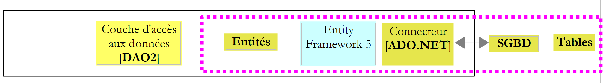

1. Introdução
1.1. Objectif
O PDF do documento está disponível |AQUI|.
Os exemplos do documento estão disponíveis |AQUI|.
O Entity Framework é um ORM (Mapeador Objeto-Relacional) inicialmente criado pela Microsoft e agora disponível em código aberto [juillet 2012, http://entityframework.codeplex.com/]. Num curso ASP.NET, utilizo a seguinte arquitetura para uma determinada aplicação web:
 |
O framework NHibernate [http://sourceforge.net/projects/nhibernate/] é um ORM que surgiu antes do Entity Framework. Trata-se de um produto maduro que permite ligar-se a várias bases de dados. O ORM isola a camada [DAO] (Data Access Objects) do conector ADO.NET. É o ORM que emite as ordens SQL destinadas ao conector. A camada [DAO], por sua vez, utiliza a interface disponibilizada pelo ORM. Esta depende do ORM. Assim, alterar o ORM implica alterar a camada [DAO].
Esta arquitetura resiste bem às alterações no SGBD.
Quando se liga a camada [DAO] diretamente ao conector ADO.NET, a alteração do SGBD tem impacto na camada [DAO]:
- nem todas as camadas SGBD têm os mesmos tipos de dados;
- os SGBD não têm as mesmas estratégias de geração de chaves primárias;
- os SGBD contêm SQL proprietário;
- a camada [DAO] pode ter utilizado bibliotecas associadas a um SGBD específico;
- ...
Quando é um ORM que está ligado ao conector ADO.NET, alterar o SGBD equivale a alterar a configuração do ORM para o adaptar ao novo SGBD. A camada [DAO] não se altera.
O framework Spring.NET [http://www.springframework.net/index.html] assegura a integração das camadas de uma aplicação. Acima:
- a aplicação ASP.NET solicita ao Spring uma referência à camada [DAO];
- o Spring utiliza um ficheiro de configuração para criar essa camada e fornecer a referência à mesma.
Esta arquitetura adapta-se bem às alterações nas camadas, desde que estas continuem a apresentar a mesma interface. Alterar a camada [DAO] acima consiste em alterar o ficheiro de configuração do Spring para que a nova camada seja instanciada em vez da antiga. Como ambas implementam a mesma interface e a camada ASP.NET utiliza essa interface, a camada ASP.NET permanece inalterada.
Temos, portanto, uma arquitetura flexível e evolutiva. Para o demonstrar, vamos substituir a camada ORM pela camada NHibernate do Entity Framework 5:
 |
Vamos proceder em várias etapas:
- vamos explorar o Entity Framework 5 com vários SGBD;
- vamos construir a camada [DAO2];
- vamos ligar a aplicação ASP.NET existente a esta nova camada [DAO].
1.2. As ferramentas utilizadas
Os testes foram realizados num portátil HP EliteBook com Windows 7 Pro, um processador Intel Core i7 e 8 GB de RAM. Utilizaremos C# como linguagem de desenvolvimento.
O documento utiliza as seguintes ferramentas, todas disponíveis gratuitamente:
Ferramentas de desenvolvimento:
- Visual Studio Express para o Office 2012 [http://www.microsoft.com/visualstudio/fra/downloads];
- Visual Studio Express para a Web 2012 [http://www.microsoft.com/visualstudio/fra/downloads].
O SGBD SQL Server Express 2012:
- o SGBD: [http://www.microsoft.com/fr-fr/download/details.aspx?id=29062];
- uma ferramenta de administração: EMS SQL Manager para o SQL Server Freeware [http://www.sqlmanager.net/fr/products/mssql/manager/download].
O SGBD Oracle Database Express Edition 11g Versão 2:
- o SGBD: [http://www.oracle.com/technetwork/products/express-edition/downloads/index.html];
- uma ferramenta de administração: EMS SQL Manager for Oracle Freeware [http://www.sqlmanager.net/fr/products/oracle/manager/download];
- um cliente Oracle para .NET: ODAC 11.2 Release 5 (11.2.0.3.20) com as Ferramentas de Desenvolvimento Oracle para o Visual Studio: [http://www.oracle.com/technetwork/developer-tools/visual-studio/downloads/index.html].
O SGBD MySQL 5.5.28:
- o SGBD: [http://dev.mysql.com/downloads/];
- uma ferramenta de administração: EMS, SQL Manager para MySQL, Freeware [http://www.sqlmanager.net/fr/products/mysql/manager/download].
O SGBD PostgreSQL 9.2.1:
- o SGBD: [http://www.enterprisedb.com/products-services-training/pgdownload#windows];
- uma ferramenta de administração: EMS SQL Manager para o PostgreSQL Freeware [http://www.sqlmanager.net/fr/products/postgresql/manager/download].
O SGBD Firebird 2.1:
- o SGBD: [http://www.firebirdsql.org/en/firebird-2-1-5/];
- uma ferramenta de administração: EMS SQL Manager para InterBase/Firebird Freeware [http://www.sqlmanager.net/fr/products/ibfb/manager/download].
LINQPad 4: uma ferramenta de aprendizagem do LINQ (Linguagem INtegrated Query) [http://www.linqpad.net/, http://www.linqpad.net/GetFile.aspx?LINQPad4.zip].
1.3. Os códigos-fonte
Os códigos-fonte dos exemplos que se seguem estão disponíveis no URL [http://tahe.developpez.com/dotnet/ef5cf].
 |
Trata-se de projetos do Visual Studio 2012 [1], reunidos numa solução [2]. Numa pasta [databases], encontrará-se uma pasta por cada SGBD utilizado. Nela encontram-se os scripts SQL para a geração da base de dados de exemplo para estes SGBD.
1.4. O método
Para descobrir o Entity Framework 5 Code First, comecei por consultar o seguinte livro: «Professional ASP.NET MVC 3», de Jon Galloway, Phil Haack, Brad Wilson e Scott Allen, publicado pela editora Wrox. Na aplicação de exemplo deste livro, os autores utilizam o Entity Framework (EF) como ORM. Como não o conhecia, pesquisei na Internet para saber mais. Descobri assim que a versão mais recente era a EF 5 e que havia incompatibilidades com a EF 4, uma vez que o código do livro, testado com a EF 5, apresentava erros de compilação.
Descobri então que havia várias formas de utilizar o EF:
- Model First: existem muitos artigos sobre esta abordagem do EF, por exemplo, o [http://msdn.microsoft.com/en-us/data/ff830362.aspx]. Este artigo é introduzido da seguinte forma:
Resumo: Neste artigo, iremos analisar o novo Entity Framework 4, que vem integrado no .NET Framework 4 e no Visual Studio 2010. Irei discutir como pode abordar a sua utilização numa perspetiva «model first», partindo do princípio de que é possível orientar o desenho da base de dados a partir de um modelo e construir tanto a base de dados como a camada de acesso aos dados de forma declarativa a partir desse modelo. O modelo contém a descrição dos seus dados representados como entidades e relações, proporcionando uma abordagem poderosa para trabalhar com o ADO.NET, criando uma separação de preocupações através de uma abstração entre a definição do modelo e a sua implementação.
Um ORM faz a ponte entre tabelas de bases de dados e classes.
 |
Acima,
- à esquerda da camada EF5, temos objetos, a que chamamos entidades;
- à direita da camada EF5, temos tabelas de bases de dados.
 |
A camada [DAO] trabalha com objetos de imagem das tabelas da base de dados. Estes objetos são agrupados num contexto de persistência e são designados por entidades (Entity). As alterações efetuadas nas entidades são refletidas, através da camada ORM, nas tabelas da base de dados (inserção, modificação, eliminação). Além disso, a camada [DAO] dispõe de uma linguagem de consulta LINQ to Entity (Language INtegrated Query) que efetua consultas sobre as entidades e não sobre as tabelas. O método Model First consiste em construir as entidades com uma ferramenta gráfica. Define-se cada entidade e as relações que a ligam às outras. Feito isto, uma ferramenta permite gerar:
- as diferentes classes que refletem as entidades criadas graficamente;
- o DDL (Linguagem de Definição de Dados) que permite gerar a base de dados.
Os exemplos que encontrei sobre este método utilizavam todos o Visual Studio 2010 Professional e um modelo denominado ADO.NET Entity Data Model. Consegui testar este modelo com o Visual Studio 2010 Professional, mas quando mudei para o Visual Studio Express 2012, que era o meu objetivo, verifiquei que este modelo já não estava disponível. Por isso, abandonei esta abordagem.
- Database First: o ponto de partida deste método é uma base de dados existente. A partir daí, uma ferramenta gera automaticamente as entidades correspondentes às tabelas da base de dados. Mais uma vez, os exemplos que encontrei, como por exemplo o [http://msdn.microsoft.com/en-us/data/gg685489.aspx], utilizam o Visual Studio 2010 Professional e o modelo ADO.NET Entity Data Model. Por isso, acabei por abandonar também esta abordagem, que era, no entanto, a minha preferida. Para saber quais as entidades a utilizar como representações de uma base de dados existente, era simples começar com uma ferramenta que as gerasse.
- Code First: escrevemos nós próprios as classes que irão formar as entidades. É necessário, então, ter um mínimo de conhecimentos sobre o funcionamento do EF. Foi este o caminho que segui, porque era compatível com o Visual Studio Express 2012.
Uma vez adquirido este conhecimento, trabalhei da seguinte forma:
- escrevia código para o SQL Server Express 2012, pois é para esta versão que se encontram a maioria dos exemplos;
- assim que esse código estava depurado, portava-o para os outros SGBD (Firebird, Oracle, MySQL, PostgreSQL).
Aqui, vamos proceder de forma diferente. Primeiro, vou descrever todos os códigos para o SQL Server e, em seguida, descreverei a sua adaptação para os outros SGBD. Nesta adaptação, são efetuados os seguintes ajustes:
- as bases de dados têm características específicas próprias. Em particular, utilizei «Triggers» para gerar automaticamente o conteúdo de certas colunas. Cada SGBD tem a sua própria forma de gerir isto;
- as entidades de imagem das tabelas podem mudar, mas isso é intencional. Poderia ter escolhido entidades adequadas a todas as bases de dados;
- o controlador ADO.NET do SGBD altera-se;
- A cadeia de ligação ao SGBD altera-se.
O procedimento adotado é o seguinte:
- associação de entidades à base de dados. Preenchimento da base de dados;
- exportação da base de dados com consultas LINQ;
- LINQPad, uma ferramenta de aprendizagem do LINQ;
- adição, eliminação e modificação de entidades;
- gestão da concorrência de acesso;
- contexto de persistência guardado numa transação;
- alteração de uma entidade fora do contexto de persistência;
- Carregamento antecipado (Eager) e diferido (Lazy);
- construção da camada [DAO];
- construção da camada web ASP.NET.
1.5. Público-alvo
O público-alvo são os principiantes.
Este documento não é um curso sobre o Entity Framework 5 Code First. Para tal, pode-se ler, por exemplo, «Programming Entity Framework: Code First», de Julie Lerman e Rowan Miller, publicado pela editora O'Reilly. O documento não pretende, de forma alguma, ser exaustivo, mas expõe simplesmente a abordagem que utilizei para compreender este ORM. Penso que esta abordagem pode ser útil para outras pessoas que se estejam a iniciar no EF5. O meu objetivo não vai além deste âmbito.
1.6. Artigos relacionados sobre o developpez.com
O livro acima referido servirá de referência. Existem, além disso, artigos dedicados ao Entity Framework no developpez.com. Aqui estão alguns deles:
- «Entity Framework – a abordagem Code First», junho de 2012 – por Reward. Este artigo e o presente documento sobrepõem-se parcialmente. No entanto, o artigo aprofunda certos pontos, nomeadamente o «mapeamento» de herança entre classes <--> tabelas;
- «Introdução ao Entity Framework», dezembro de 2008, por Paul Musso;
- «Criar um modelo de classes com o Entity Framework», abril de 2009, por Jérôme Lambert;
- «Avaliação do desempenho do Linq to SQL em comparação com o SQL e o Entity Framework», junho de 2011, da Immobilis;
- "Entity Framework Code First: ativar a migração automática", junho de 2012, por Hinault Romaric;
- «Criação de uma aplicação CRUD com WebMatrix, Razor e Entity Framework», maio de 2012, por Hinault Romaric;
- «Entity Framework: à descoberta das migrações Code First», junho de 2012, por Hinault Romaric;
Conforme referido anteriormente, o presente documento não é exaustivo. Recomenda-se a leitura dos artigos acima referidos para colmatar algumas lacunas. A minha pesquisa pode ter ficado incompleta. Peço desculpa aos autores que possa ter esquecido.